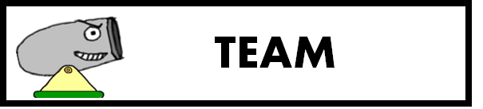

-
코드 다운받기
최범근 - Test Manager
-
Map Editor
레벨 제작을 위한 맵에디터를 제작함, 마우스와 키보드를 이용해 모든 오브젝트를 조정이 가능함 또한 기존의 레벨을 불러오는 기능과 저장하는 기능을 구현함. 맵에디터 사용 방법을 알려 줄 UI 또한 존재해 쉽게 사용가능.- ObjectManager
게임 내에서 오브젝트들을 관리하는 오브젝트 매니저를 제작함. 게임 내 오브젝트에 대한 모든 정보를 가지고 있으며,맵 에디터로 제작된 텍스트파일을 통해 레벨을 로딩하는 로직을 구현함.- Applying All Physics to the Objects

오브젝트 매니저를 이용해 게임 내 오브젝트들의 오브젝트 스타일을 구분해서 모든 물체들에게 필요한 물리들을 적용시키는 로직을 구현함.- Gravity Zone
공이 Gravity Zone에 들어오면 공의 속도에 다른 힘을 주어 방향을 전환 시키는 로직을 구현함.- Breakable Wall
공으로 파괴할수있는 벽, 사용자의 설정에 따라서 벽의 강도를 바꿀 수 있음.- Art Assets
게임내의 대부분의 아트 에셋을 직접 제작함- Score System
모든 레벨에는 3개의 별이 존재함. 획득한 별의 개수를 세이브 파일에 저장하고 레벨 선택 단계에서 획득한 별을 갯수를 표시하는 로직들을 구현함.- Instruction System
플레이어가 쉽게 플레이할 수 있도록 조작법등의 UI를 화면에서 표시하는 로직을 구현함 - ObjectManager
-
Map Editor
홍성현 - Tech Director
Physics
- Collision
- Reflection
- Trajectory
- Shooting cannon
- Adapting physics to game objects
유현준 - Producer
FMOD
- Level Selection
- Option
- Menus
- Scheduling
- Button Action
김현민 - Lead Designer
HUD
- Making Levels

Out & In
개발 시기 : 2017년 3월 ~ 2017년 6월
게임 장르 :2D 퍼즐 발사 게임- 사용 엔진 : Warp Engine
- 사용 언어 : C++, C
- 플랫폼 : Windows
- 마일스톤 : 베타
하이 컨셉
“Out & In 은 플레이어가 목표에 도달하기 위해서 일정한 각도로 공을 쏴야 하는 2d퍼즐 발사 게임입니다.
자세한 컨셉
Out & In 은 레벨을 클리어하기 위해서 플레이어가 공을 특정 구역에 도달하게 해야하는 게임입니다. 이를 위해서는 플레이어가 화살표 키보드와 스페이스 바를 사용하여 대포의 각도와 힘을 조절해야 합니다. .
플레이어의 라이프 수는 제한적이고 많은 장애물들이 있기 때문에, 플레이어들은 신중하게 대포를 발사해야합니다..
게임 플로우
스플래시 스크린
게임이 시작되면 Digipen로고와 팀 DizzyPen ,Fmod의 짧은 스플래시 화면이 표시됩니다. .
옵션
옵션 스테이트에서 사용자는 창모드 설정과 전체화면 모드를 설정할 수 있고, 게임 데이터를 초기화 시킬 수 있습니다. .
메뉴
Out and In 에는 30개의 레벨이 존재합니다. 레벨 셀렉트 스테이트에서 마우스를 이용해 레벨을 선택할 수 있습니다.전 레벨을 클리어해야만 다음 레벨을 선택할 수 있습니다. .
게임스크린
게임이 시작되면 레벨마다 대포의 위치가 정해집니다.대포의 각도와 힘은 플레이어에 의해 결정됩니다. 각 레벨마다 여러가지 장애물이 있습니다. 플레이어가 레벨을 클리어할려면 공을 클리어 존에 향해 발사해야 합니다. .
게임 메커니즘
물리
이 게임의 주요한 물리학은 중력, 충돌(collision) 그리고 튕김(reflection)에 초점을 맞추고 있습니다. 중력은 포탄과 몇몇 장애물에 적용됩니다. 이러한 여러 물체간의 충돌을 이용해 플레이어는 레벨을 클리어해야합니다. 튕김도 이 게임에서 중요한 역할을 힙니다. 공이 지면에 떨어질 때, 공은 반사되어야 한다. 또한, 공이 힘을 가지고 벽 위에 충돌한다면, 그것은 반사되어야 합니다. .
조작법
기본적인 조작법은 화살표 키를 사용하여 공을 쏘는 대포의 각도를 조절하고 스페이스 바를 누르면 대포의 발사 세기가 결정됩니다. 공으로 벽을 넘겨야 할 경우,오랫동안 스페이스 바를 눌러야합니다. .
승리 조건
이기는 조건은 매우 간단합니다. 목표 지역에 공을 발사하는 것 입니다.레벨마다 많은 장애물이 존재하기 때문에 쉽게 레벨을 클리어하는 것은 어렵습니다. .
패배 조건
레벨마다 3번의 기회가 있습니다. 플레이어가 주어진 라이프안에 레벨을 클리어하지못한다면 게임에서 패배합니다. .
스코어 시스템
레벨마다 3개의 별이 존재합니다. .
게임 디자인
레벨
각 레벨에는 가시,움직이는 벽, 중력이 바뀌는 구역, 부숴지는 벽등 다양한 물체가 있습니다. .
라이프
라이프는 특정 숫자로 제한되어있고, 공이 화면 밖으로 나가거나 모든 추진력을 잃거나 가시에 충돌하면 라이프를 잃습니다. .
HUD
라이프의 갯수와 현재의 레벨 단계, 대포의 현재 각도를 보여주는 HUD가 존재합니다. .
사운드
기본적인 배경음악이 재생되고 대포에서 공이 발사될때 소리가 재생되고 , 승리하거나 패배할때에도 사운드가 재생됩니다.모든 사운드는 디지펜 사운드 에셋을 이용합니다. .
스코어 시스템
레벨마다 3개의 별이 존재합니다. .
포스트모템 TEAM DizzyPen
개발 팀
현준, 범근,성현은 이전 학기까지 기숙사에서 같이 살면서 서로의 지식을 나누고 우정을 쌓았다. 이러한 결과로 우리는 초밥 레스토랑에서 점심을 같이 먹으면서 팀을 하기로 결정하였다. 개개인의 능력을 자세하게 설명하자면 현준은 팀을 이끌 리더쉽이 있고, 그는 좋은 작문 실력을 가지고 있어서 프로듀서로서 이 프로젝트에 참여했다. 범근은 관찰과 분석에 탁월해서 팀에서의 테스트 매니저 역할을 맡았다. 다른 맴버들보다 수학과 물리를 잘하는 성현은 물리 파트를 맡았다. 마지막으로, 매우 창의적이고 많은 아이디어를 가진 현민은 리드 디자이너의 역할을 맡았다..
툴
오디오 파일의 길이를 줄이고 편집하기 위해 “Audacity”가 사용되었다..
우리는 “paint.net” 을 사용하여 사용자 인터페이스, 게임 내 문자와 같은 그래픽 자료를 제작했습니다. VisualStudio와 WarpEngine 으로 게임을 제작하였습니다.
잘된 점
1.의사소통
게임 디자인을 정하는 회의를 통해 우리는 Angrybird와 같은 2D 발사체 게임을 만들기로 결정하였습니다. 많은 다른 게임 아이디어들이 있었지만 시간적 문제와 실현 가능성이 낮아서 폐기되었습니다. 한 팀 맴버가 개인적인 문제로 매우 바빠서 프로젝트 초기에 팀에 작은 불화가 생겼었다. 우리 팀은 이러한 문제를 빠르게 파악하고 팀과의 대화와 소통으로 해결하였다. 프로젝트 초기에는 서로의 역할을 분담하는데에 많은 어려움이 있었지만, 많은 회의와 고민 끝에 다양한 역할을 적절하게 분담하는데 성공하였다. 그 후, 우리 팀은 프로젝트 초기때 보다 더 많은 아이디어 회의를 진행하고 미래를 위해 게임 전체를 디자인하는 방법을 결정하였다. 이러한 소통은 서로 즉각적인 피드백을 받을 수 있었고 이는 게임의 퀄리티를 높이는데 많은 기여를 하였다. .
2.효율적인 계획 및 일정
모든 팀원들이 처음하는 프로젝트였기 때문에, 프로젝트 진행을 계획하는데 많은 어려움을 겪었습니다. 매 주 위클리 리포트를 통해 계획을 짜고, 할 수 있는 것과 할 수 없는 것을 정확하게 분리하여 일의 능률성을 높였습니다. .
3.심플함
게임 디자인이 매우 단순했기 때문에, 게임 내의 주요 매커니짐이 구현되었을때 프로젝트 진행속도가 매우 빨려졌습니다. 필수적인 공과 벽사이의 충돌, 반사, 물리만 완성된다면 다양한 레벨을 만드고 다른 기능을 가진 오브젝트를 만드는 것이 프로젝트의 전부였습니다. 또한 게임 내 맵 에디터가 상당히 일찍 만들어져서, 레벨 제작이 더욱 수월해졌습니다. .4.게임 개발에 대한 이해
CS230 강의에서, 우리 팀은 게임 엔진이 무엇인지 어떻게 작동하는지를 배웠습니다. 처음에는 왜 이 강의가 중요한지를 이해하지 못했지만, 실제로 게임을 개발하면서 CS230 과목이 얼마나 중요한지를 깨달았습니다. 이를 통해서 실전적인 게임 개발에 대한 경험을 할 수 있었기에 매우 유익한 경험이었습니다. 게임 내의 버그를 발견하고 고치는 법을 배울 수 있었고, 이는 프로그래밍 실력을 높이는데에 많은 도움을 주었습니다. .
5. 플레이 테스팅
게임이 매우 간단하고 플레이 타임이 짧았기때문에 플레이 테스트에서 많은 피드백을 받을 수 있었다. 간단한 테스트였지만 테스터로 부터 받은 피드백은 매우 가치가 있었고 게임을 발전시키는데에 많은 도움이 되었습니다. 그래픽 문제 및 물리적 문제를 유저들의 피드백을 통해 고칠 수 있었습니다. .잘 안된 점
1. 동기 부여의 부족
, 이번 프로젝트가 전체적인 게임을 개발하는 첫 프로젝트였다. 팀 전체가 릴리즈 플랜을 따라 개발을 진행하였고 계획에서 벗어나지않았다. 생각했던 것 보다 게임 개발이 빠르게 진행되었고 이로 인해 릴리즈 플랜에 존재하는 모든 것을 구현한 뒤에 게임 개발에 대한 동기부여가 떨어졌었다. 그로인해 마지막 단계에서 개발 속도가 매우 느려졌고 이는 큰 버그를 게임에 남기게 되었다. .2.아트 에셋 부족
우리팀에는 아티스트가 없어서 아트 에셋 퀄리티가 매우 부족했습니다. 심지어 우리 팀은 아트 에셋을 직접 제작하기 위해 노력했는데, 그럼에도 다른 팀들에 비해 상대적으로 퀄리티가 낮아 보였다. 우리는 주로 paint.net을 사용하여 이미지를 만들었다. 이미지의 퀄리티는 매우 높지 않았고 이미지의 해상도는 낮았다. 그래서, 이미지가 확대되었을 때, 그것은 종종 해상도가 깨지는 현상이 발생했다.
3. 의사 소통
처음에는 의사 소통이 잘 되었는데, 개인 스케줄이 바빠서 가끔 팀원들 간의 의사 소통에 어려움을 겪기도 했습니다. 우리는 각 팀 맴버들이 가지고 있는 문제점을 지적하는 것을 망설였다.이 때문에 게임 제작속도가 늦어졌습니다.
4. 시간 관리
게임 개발의 일정과 계획이 구체적이고 공평하게 팀원들에게 분배되지 않았었다.
비록 처음에는 좋은 계획이 있었지만, 팀은 전반적인 게임제작이 끝나고 나서 느슨한 상태가 되었습니다.
느스한 상태를 고치고, 팀원들이 프로젝트에 더 많은 시간을 투자했다면, 더 많은 기능을 만들고 더 게임을 잘 다듬었을것이라 생각합니다.
문제를 해결하는 방법
Teaching Assistants의 도움으로 프로젝트 소스 코드와 물리학, 충돌, fileIO와 같은 여러가지 문제를 해결할 수 있었습니다.
또한, 그들은 코딩에 대한 유용한 정보와 코딩 기술을 향상시키는 방법을 우리에게 가르쳐주었습니다.
의사 소통의 문제에 있어서는, 우리는 팀이 미래를 위해 일정을 짤 수 있도록 서로 만나서 정기적인 회의를 하려고 했다. 잦은 만남과 정기적인 회의가 확실히 게임 개발에 기여했다.
미래
우리는 이 프로젝트를 통해 많은 교훈을 얻었다고 생각합니다. 커뮤니케이션은 게임 개발 현황을 확인하기 위해 팀 프로젝트에서 매우 중요합니다. 또한 용감하게 모든 코드를 삭제하고 다시 처음부터 시작하는 것도 괜찮은 방법이란 것을 배웠습니다. 우리는 이 프로젝트에서 배운 경험을 통해 미래에 더 전문적인 프로그래머가 될 것 입니다.
© This webpage is formatted by TEMPLATED.co